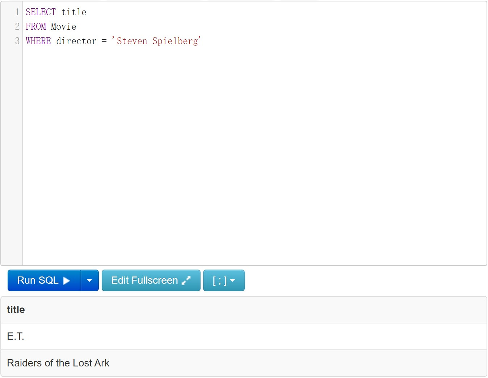
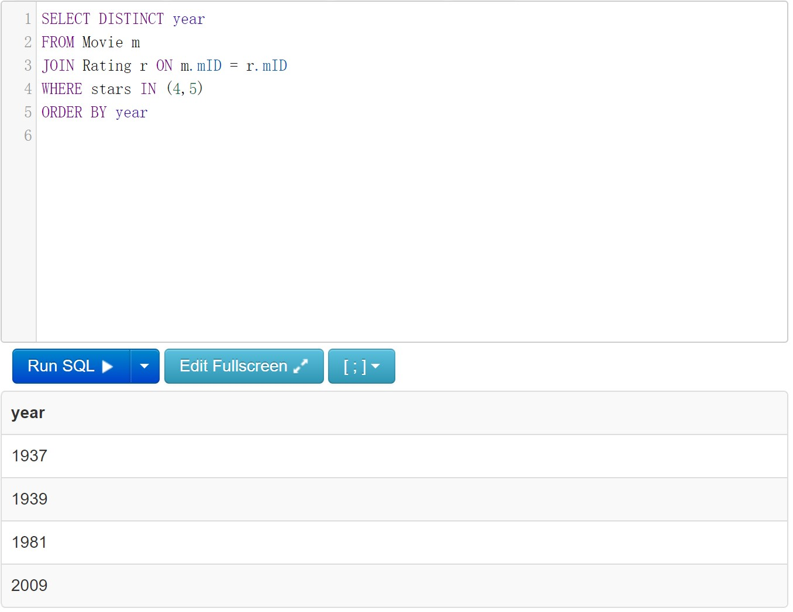
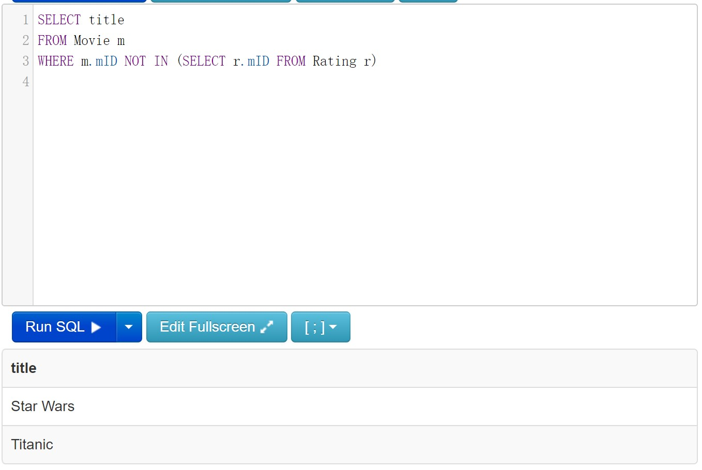
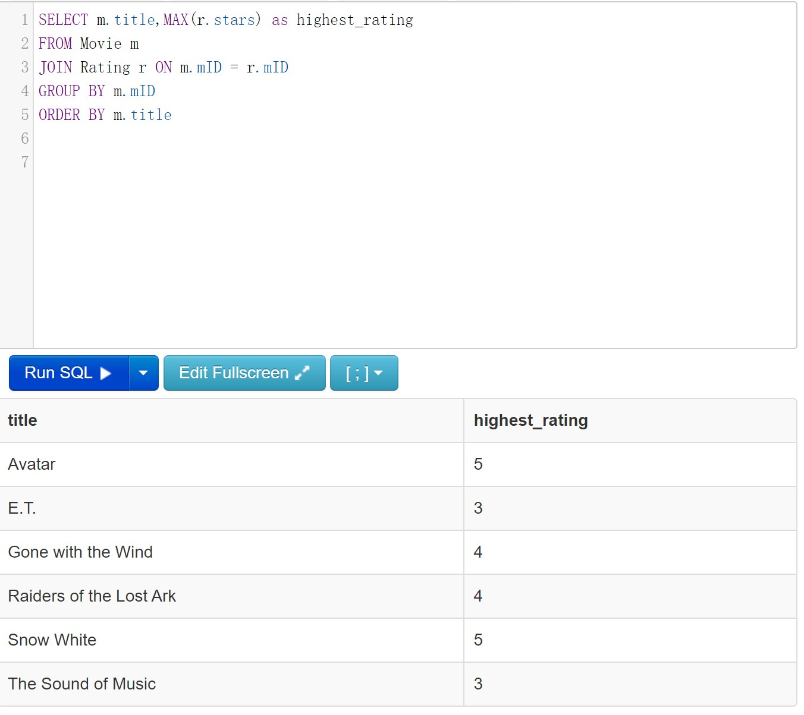
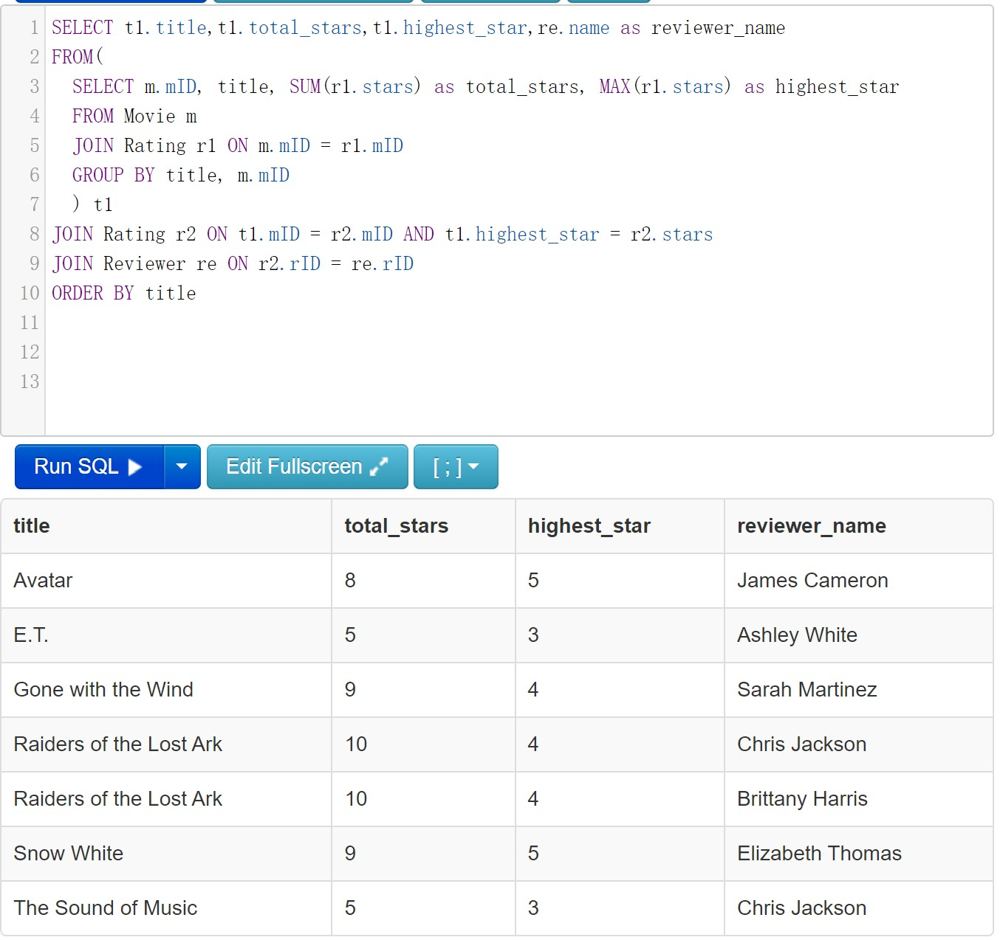
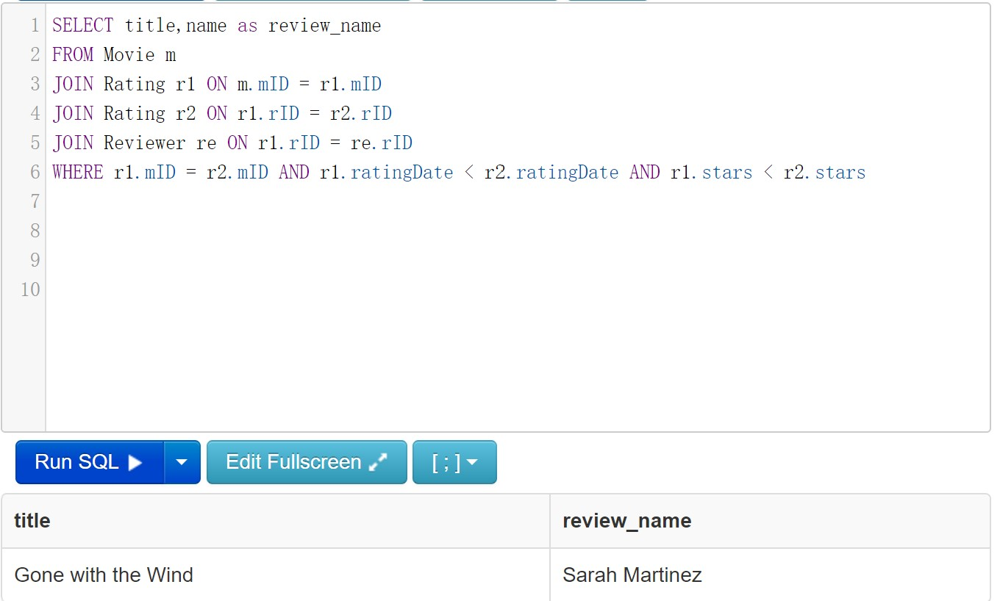
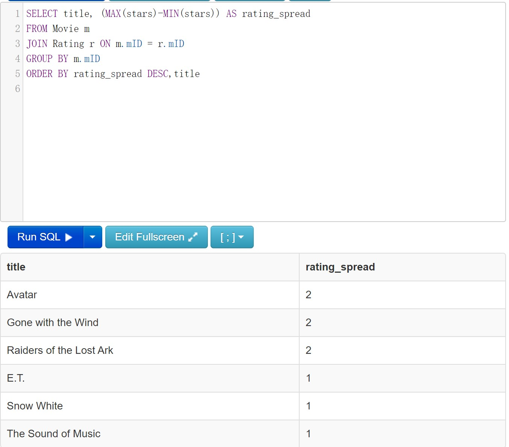
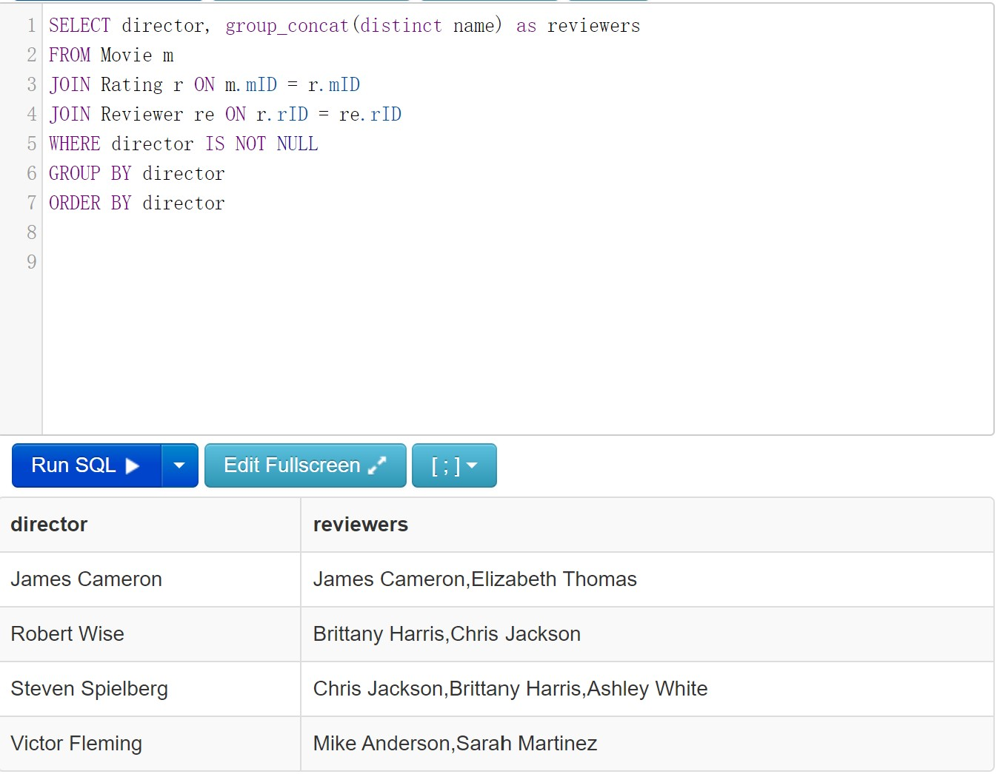

SQL results
| Qn | Screenshot |
|---|---|
| 1 | Find the titles of all movies directed by Steven Spielberg.  |
| 2 | Find all years that have a movie that received a rating of 4 or 5, and sort them in increasing order.  |
| 3 | Find the titles of all movies that have no ratings  |
| 4 | For each movie that has at least one rating, find the highest number of stars that movie received. Return the movie title and number of stars. Sort by movie title.  |
| 5 | For each movie that has at least one rating, find the movie title and total number of stars, the highest star and the person who gave highest star.  |
| 6 | For all cases where the same reviewer rated the same movie twice and gave it a higher rating the second time, return the reviewer’s name and the title of the movie.  |
| 7 | For each movie, return the title and the ‘rating spread’, that is, the difference between highest and lowest ratings given to that movie. Sort by rating spread from highest to lowest, then by movie title.  |
| 8 | Find the names of reviewers for every director (one row per director with all reviewers).  |